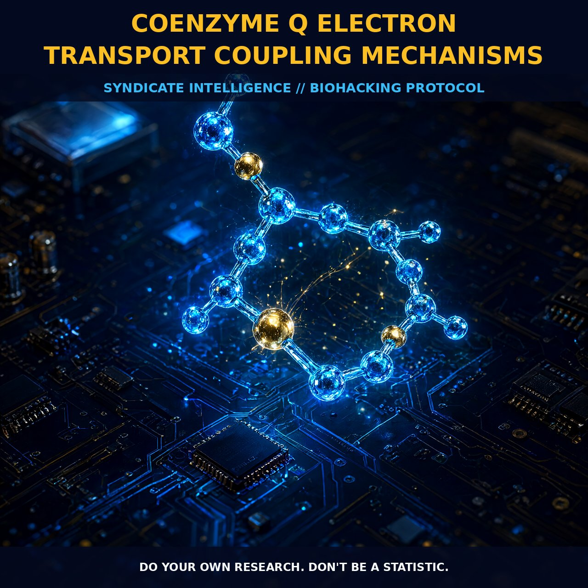

Coenzyme Q Electron Transport Coupling: Mechanisms and Membrane

1. The Molecular Pivot: Electron Transport Mechanics
Coenzyme Q serves as the central pivot within mitochondrial electron transport, operating simultaneously as a mobile electron carrier and a critical redox buffer embedded in the lipid bilayer of biological membranes. This amphipathic molecule is strategically partitioned into lipophilic organelles, adopting a preferred orientation where the hydroxyl substituents of its benzoquinone ring interact dynamically with polar environments, while its polyisoprenoid chain remains securely anchored in the hydrophobic core.
The primary mechanism involves the rigorous transfer of electrons between redox components to establish proton gradients, a process driven by oxidation-reduction reactions that cycle ubiquinone and ubiquinol through distinct binding domains. At the Qo site, a critical interface emerges where substrate ferric cytochrome c delivers oxidizing potential, catalyzing thermally activated endergonic electron transfer. This interaction forms a highly reactive semiquinone intermediate in the transition state, acting as a bridge between energy sources and downstream metabolic processes.
Structural flexibility defines Coenzyme Q's utility. While homologues often feature polyisoprene chain lengths ranging from 9 to 10 units, bond energy plateaus at approximately 4 isoprenoid units. This architecture enables the molecule to rotate about an axis parallel to the bilayer plane and diffuse laterally within the membrane. Notably, the reduced form, ubiquinol, exhibits increased polarity, allowing it to penetrate closer to the lipid-water interface compared to its oxidized counterpart, which remains constrained in the central hydrophobic domain.
2. Biological Leverage: Beyond Simple Transfer
The biochemical leverage of Coenzyme Q extends far beyond linear electron transfer, encompassing direct lipid antioxidant activity and the vital recycling of radical forms of vitamin E. In its reduced state, it acts as a primary scavenger of free radicals directly within the membrane matrix, protecting respiratory efficiency from oxidative impairment.
Formation of semiquinones represents the most reactive intermediate stage. These molecules function in physiological contact with reaction partners to exclude undesired side effects while facilitating scalar electron transfer through four site-directed semiquinone pools. This redox cycling capability ensures that energy conversion operates as a complex circuit rather than a simple flow, ensuring that hydrogen translocations are accurately accounted for across multiple loops of the respiratory chain.
Respiratory complexes I and III possess localized sites of energy conversion—specifically the Qnz and Qo sites—which utilize the ubiquinone pool to drive proton movement. The energetics at the Qo site involve the release of protons and the formation of a low-potential chain driven by free energy drops between cytochrome bL and cytochrome bH. This promotes electron transfer across the membrane, contributing significantly to the proton-motive force required for cellular respiration. Importantly, physiological concentrations of Coenzyme Q often sit near the Km for NADH oxidation, indicating that substrate availability is a modulator of oxidative activity rather than a static variable.
3. Protocol Implementation: Optimizing Output
For those optimizing mitochondrial output, bioavailability is heavily dependent on Coenzyme Q's hydrophobic nature and its partitioning into cell membranes. Supplementation strategies must consider the polyisoprenoid chain length; homologues with longer chains offer distinct stability and diffusion profiles within the lipid bilayer. Evidence suggests that maintaining adequate levels is crucial, as physiological concentrations are often below saturation for NADH oxidation.
This sub-saturation status implies that incremental increases in Coenzyme Q can yield measurable improvements in respiratory efficiency without immediately hitting a ceiling effect. Optimization involves ensuring sufficient substrate availability to support the formation of reactive semiquinones independently of complex protein-bound states, thereby keeping respiratory complexes primed for efficient proton gradient generation and ATP synthesis.
4. Prostar Life Hack
Stack lipid-soluble antioxidants with Coenzyme Q to leverage its natural recycling of Vitamin E. Because the molecule rapidly exchanges between the Qow domain and the bulk pool, maintaining high membrane saturation ensures immediate availability during periods of peak metabolic demand.
Prostar Life Hack
Stack lipid-soluble antioxidants with Coenzyme Q to leverage its natural recycling of Vitamin E. Because the molecule rapidly exchanges between the Qow domain and the bulk pool, maintaining high membrane saturation ensures immediate availability during periods of peak metabolic demand.
[ AUTHOR: LEAD TECHNICAL RESEARCHER ]